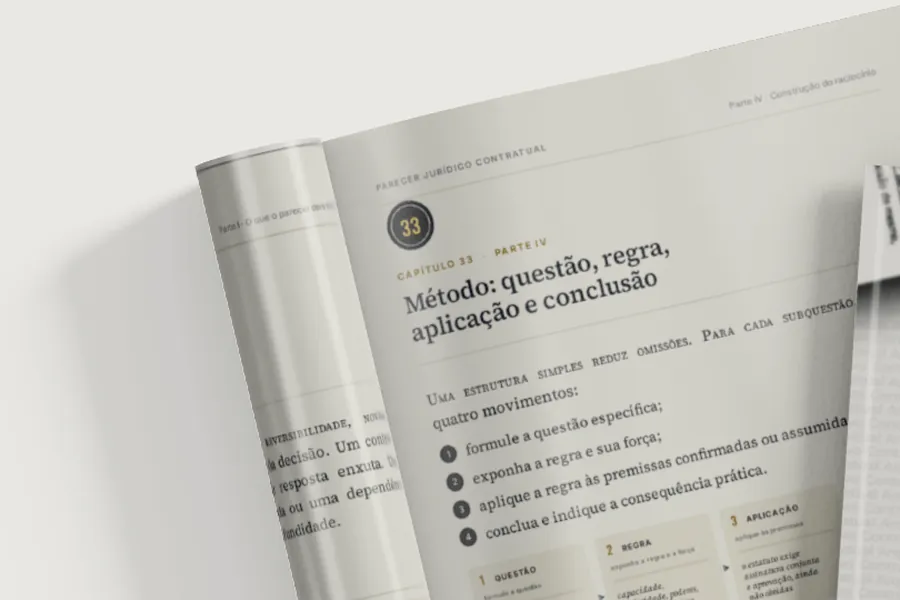
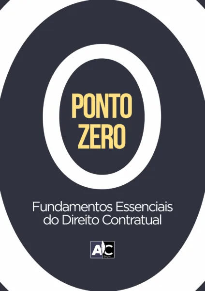
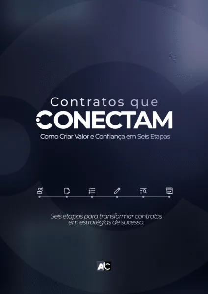
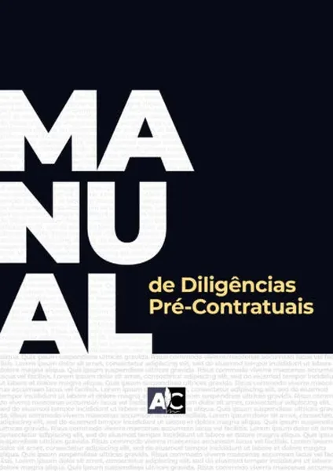
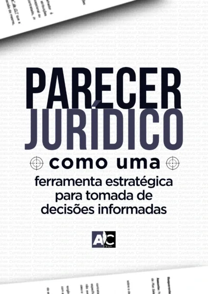
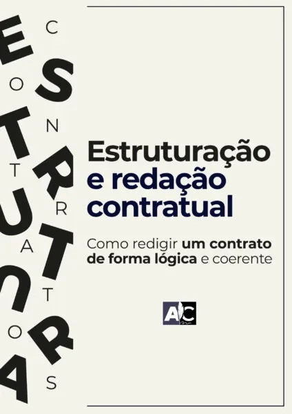
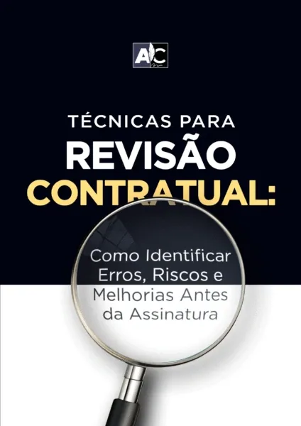
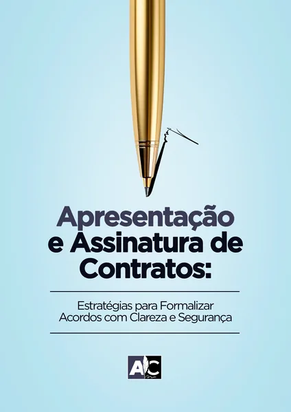

Para quem já atuaA demanda contratual chega antes do domínio dela. Material de consulta para esse momento.
“Nunca fiz esse tipo de contrato.”
Mesmo assim a demanda chegou, o cliente está esperando e é a sua assinatura que vai no documento. O Método Jornada Contratual são 787 páginas escritas sobre o que perguntar, o que conferir e como redigir — organizadas para você abrir na hora em que precisar, não para assistir num fim de semana.
R$ 497,90 à vista ou 12x de R$ 50,59 · 7 dias para desistir

O problemaNão é falta de modelo. É não saber o que o modelo não diz.
Você conhece a sequência. Ela se repete toda vez.
O cliente liga e pede um contrato de um tipo que você nunca fez. Você diz que analisa e retorna — porque recusar custa o cliente, e recusar duas vezes custa também a indicação dele.
Começa a busca. Google, grupo de WhatsApp, um colega que talvez já tenha feito, o ChatGPT. No fim aparece alguma coisa: um texto sem fonte, do qual você não sabe a origem nem por que cada cláusula está ali. Você troca os nomes, os valores, a data. Lê três vezes. Manda.
E fica com a sensação de ter assinado embaixo de algo que não conseguiria defender se o cliente perguntasse por quê.
A pergunta que você não fez
O cliente diz “preciso de um contrato” e acha que já disse tudo. Três semanas depois aparece o sócio oculto, a dívida, o imóvel que não é dele. O dado que muda o contrato inteiro estava lá desde o começo — ninguém perguntou.
A certidão que você não pediu
Matrícula, ônus, poderes, certidões das partes, registro, licenças. Cada operação tem a sua lista — e quem não a conhece descobre o que faltava depois da assinatura, quando o problema já é responsabilidade de quem redigiu.
A cláusula que você copiou sem saber por quê
Ela estava no modelo, então ficou. Você não sabe se protege o seu cliente ou o outro lado, se vale para esse caso, nem o que deveria estar ali e não está. E é você que assina.
O que você recebe
Oito manuais, na ordem em que o trabalho acontece
Cada um é um manual completo, com partes, capítulos numerados, quadros, um caso integrado do pedido à execução, exercícios comentados e referências normativas ao final.
Referências normativas e jurisprudenciais conferidas até setembro de 2026. Arquivos em PDF, com busca por palavra, para ler na tela ou imprimir.







Cinco instrumentos preenchíveis
- Ficha Estratégica de Atendimento8 p.
- Checklist de Diligências Pré-Contratuais8 p.
- Checklist de Estruturação e Redação11 p.
- Checklist de Revisão Contratual11 p.
- Manual do Parecer Jurídico8 p.
Não são resumos do conteúdo. São os formulários de trabalho, em PDF e DOCX, para levar à reunião e usar na conferência final. Mais 46 páginas.
Laboratório de Contratos
- Promessa de compra e venda
- Corretagem imobiliária
- Arrendamento rural
- Parceria pecuária
- Empreitada civil
- Locação comercial
- Locação residencial
- Sublocação
- Facilities
- Cessão de uso de imagem
- Design de interiores
- Cessão de crédito
- Cessão de direitos autorais
- Representação comercial
Cada coleção traz um manual fundamentado — a lei que incide, o que conferir antes, o que cada cláusula resolve — e o modelo editável. São 14 prontas hoje; outras 10 entram ao longo do acesso, pelos pedidos dos alunos.
Sobre o formatoFoi uma escolha, não uma economia de produção.
Não existe videoaula aqui. É tudo escrito.
Todo advogado tem dois ou três cursos parados na aula 4 de 38. O problema raramente é disciplina: é que vídeo cobra um tempo que a rotina não tem, e a demanda não espera você chegar na aula certa.
Você precisa achar o minuto certo
Chegou a demanda e você lembra que o assunto apareceu em alguma aula. Em qual? Arrasta a barra de progresso, escuta trechos em 1,5x, desiste e procura no Google. Vídeo não se folheia, não se busca por palavra e não se lê com o cliente na linha.
Você abre na página que precisa
Busca pelo termo, lê o trecho, imprime o checklist e trabalha com ele ao lado. Dez minutos de leitura antes de atender resolvem mais que um fim de semana de maratona — e dois anos depois o material continua servindo para consulta, não como curso a terminar.
RelatosMensagens recebidas no Instagram e no WhatsApp, de quem já acessou.
O que dizem quem está com o material na mão
“Excelente. Não é um conteúdo raso. Muito robusto.”
Mensagem recebida no direct
“Acabei de analisar o material de representação comercial. O PDF anexo está excelente! Apresenta informações relevantes de forma clara e de fácil compreensão. Parabéns pelo conteúdo!”
Mensagem no WhatsApp
“O material é excelente, me ajudou muito a ganhar tempo na implementação desse serviço de forma escalável. Me ajudou a organizar o conhecimento que eu já tinha, me deu novos insights e acelerou meu processo interno de trabalho.”
Advogado em atuação contratual
“Estou amando a jornada contratual, é muito completa, o assunto é bem aprofundado. Sou recém-aprovada na OAB e escolhi seguir a advocacia contratual — o seu curso está me dando uma excelente base para começar. Vale muito mais que o preço que foi pago!”
Mensagem no Instagram
São prints originais, sem edição. Amplie para ler as mensagens no contexto em que chegaram. Nenhum deles foi solicitado: são relatos espontâneos de quem abriu o material e escreveu depois.
Quem escreveu
Gabriel Viana
Advogado, contratualista e criador do Arquivo Contratual. À frente do núcleo contratual do escritório, atendendo operações de imóveis, agronegócio, societário e patrimônio, percebi que as mesmas três dificuldades apareciam em quase toda demanda: reconhecer o trabalho que existe antes do pedido de contrato, organizar informação e decisão sem refazer tudo a cada cliente, e explicar ao cliente o alcance da atuação.
Escrevi a Jornada para reunir o raciocínio jurídico e os instrumentos desse trabalho num só lugar. São 787 páginas com referências conferidas até setembro de 2026 — para que você consiga aceitar uma demanda que nunca fez, saber por onde começar e entregar um contrato que defende de cabeça erguida se o cliente perguntar o porquê de cada linha.
Na próxima demanda difícil, você vai ter onde olhar
- 8 manuais · 741 páginasDo fundamento do direito contratual à formalização, com caso integrado e exercícios comentados em cada um.
- 5 instrumentos · 46 páginasFicha de atendimento, três checklists e o modelo de parecer, em PDF e DOCX.
- 14 coleções contratuaisManual fundamentado e modelo editável por operação. Outras 10 entram ao longo do acesso.
- Assistente treinado no métodoPara consultar os materiais. Três dos manuais trazem capítulos sobre uso de IA com supervisão na diligência, no parecer e na revisão.
- Suporte pelo WhatsAppCanal direto para dúvidas sobre acesso, materiais e utilização.
- 2 anos de acessoCom as atualizações publicadas no período. Sem renovação automática e sem cobrança depois.
Entre, leia tudo por dentro. Se não for para você, o valor volta.
Você acessa os oito manuais, os instrumentos e as coleções, e decide com o material na mão — não com uma descrição dele. Se concluir que não é para o seu momento, basta avisar em até 7 dias contados da compra e o reembolso é processado integralmente pela Hubla. Você não precisa justificar. O risco dessa decisão é meu, não seu.
Antes de decidirSe ficar qualquer dúvida, fale com a equipe pelo WhatsApp.
Dúvidas frequentes
O conteúdo é mesmo todo em PDF? Não tem aula em vídeo?
É todo escrito, em PDF: os oito manuais, os instrumentos e os manuais das coleções. Não existe videoaula, horário de turma nem live para acompanhar. Foi uma escolha. Material escrito você lê no ritmo que quiser, busca por palavra, imprime, grifa e relê em trinta segundos quando a demanda aparece — e é assim que ele é de fato usado. Tudo fica disponível desde o primeiro acesso.
Chegou um contrato que não está nas 14 coleções. E agora?
É para isso que existem os oito manuais. O caminho é o mesmo em qualquer contrato: o que perguntar no atendimento, o que verificar antes de redigir, como montar a estrutura e como revisar. As coleções aceleram os tipos que já estão prontos; os manuais dão o método para os que não estão. Na plataforma você também indica qual contrato quer ver nas próximas coleções.
Já fiz pós-graduação em contratos. Isso acrescenta?
São coisas diferentes. A pós entrega teoria: princípios, institutos, classificação, jurisprudência. O que costuma faltar é o passo a passo do trabalho — qual pergunta fazer na primeira reunião, qual certidão pedir antes de redigir, o que a cláusula precisa resolver na prática, como revisar antes de mandar. Se a sua base teórica já está firme, você aproveita mais rápido.
O ChatGPT não escreve o contrato de graça?
Escreve, e muita gente usa para uma primeira estrutura. O que ele não faz: não conhece os fatos do seu caso, não viu os documentos, não sabe o que deixou de ser conferido e não responde por nada. Quem assina é você. Três dos manuais — Diligências, Parecer e Revisão — trazem capítulos específicos sobre uso de inteligência artificial com supervisão: o que a ferramenta resolve, o que precisa ser conferido e como registrar essa conferência.
Serve para quem está começando agora?
Sim. O primeiro manual, Ponto Zero, organiza os fundamentos antes de entrar no método, e os instrumentos acompanham cada etapa do trabalho. Boa parte de quem usa chegou vindo de outra área — cível, trabalhista, criminal — e passou a receber demanda contratual antes de dominar a matéria. Para quem já atua há anos, os manuais e as coleções aprofundam tipos de contrato que ainda não fazem parte da rotina.
Em quanto tempo as 10 coleções restantes ficam prontas?
Sendo direto: hoje são 14 coleções prontas e disponíveis no momento em que você entra. As outras 10 estão em produção e saem ao longo do seu acesso, priorizadas pelos pedidos dos alunos. Decida pela entrega que já existe — os 8 manuais, os 5 instrumentos e as 14 coleções. O resto é acréscimo.
Como funcionam o pagamento e a liberação?
O pagamento é pelo checkout da Hubla: R$ 497,90 à vista ou 12 parcelas de R$ 50,59 no cartão. O acesso é liberado logo após a confirmação do pagamento, com todo o material disponível de uma vez. São dois anos, sem renovação automática e sem cobrança posterior.
E se eu comprar e concluir que não era o que eu esperava?
Você entra, lê todo o material por dentro e decide com ele na mão. Se concluir que não é para o seu momento, basta avisar em até 7 dias contados da compra: o reembolso é integral e processado pela Hubla, sem necessidade de justificar.
787 páginas sobre o trabalho que vem antes da minuta
R$ 497,90 à vista ou 12x de R$ 50,59 · 2 anos de acesso · 7 dias de garantia